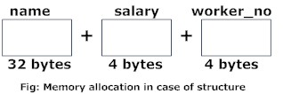
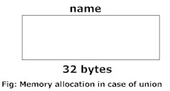

Unions are quite similar to structures in C. Like structures, unions are also derived types.
union car
{
char name[50];
int price;
};
Defining a union is as easy as replacing the keyword struct with the keyword union.
How to create union variables?
Union variables can be created in similar manner as structure variables.
union car
{
char name[50];
int price;
} car1, car2, *car3;
OR
union car
{
char name[50];
int price;
};
int main()
{
union car car1, car2, *car3;
return 0;
}
In both cases, union variables car1, car2 and union pointer variable car3 of type union car is created.
Accessing members of a union
Again, the member of unions can be accessed in similar manner as structures.
In the above example, suppose you want to access price for union variable car1, it can be accessed as:
car1.price
Likewise, if you want to access price for the union pointer variable car3, it can be accessed as:
(*car3).price or; car3->price
Difference between union and structure
Though unions are similar to structure in so many ways, the difference between them is crucial to understand.
The primary difference can be demonstrated by this example:
#include <stdio.h>
union unionJob
{
//defining a union
char name[32];
float salary;
int workerNo;
} uJob;
struct structJob
{
char name[32];
float salary;
int workerNo;
} sJob;
int main()
{
printf("size of union = %d", sizeof(uJob));
printf("\nsize of structure = %d", sizeof(sJob));
return 0;
}Output
size of union = 32 size of structure = 40
More memory is allocated to structures than union
As seen in the above example, there is a difference in memory allocation between union and structure.
The amount of memory required to store a structure variable is the sum of memory size of all members.

But, the memory required to store a union variable is the memory required for the largest element of an union.

Only one union member can be accessed at a time
In the case of structure, all of its members can be accessed at any time.
But, in the case of union, only one of its members can be accessed at a time and all other members will contain garbage values.
#include <stdio.h>
union job
{
char name[32];
float salary;
int workerNo;
} job1;
int main()
{
printf("Enter name:\n");
scanf("%s", &job1.name);
printf("Enter salary: \n");
scanf("%f", &job1.salary);
printf("Displaying\nName :%s\n", job1.name);
printf("Salary: %.1f", job1.salary);
return 0;
}
Output
Enter name Hillary Enter salary 1234.23 Displaying Name: f%Bary Salary: 1234.2
Note: You may get different garbage value or empty string for the name.
Initially in the program, Hillary is stored in job1.name and all other members of job1, i.e. salary, workerNo, will contain garbage values.
But, when user enters the value of salary, 1234.23 will be stored in job1.salary and other members, i.e. name, workerNo, will now contain garbage values.
Thus in the output, salary is printed accurately but, name displays some random string.
Passing Union To a Function
Union can be passed in similar manner as structures in C programming.
Visit this page to learn more about: How structure can be passed to function in C programming?